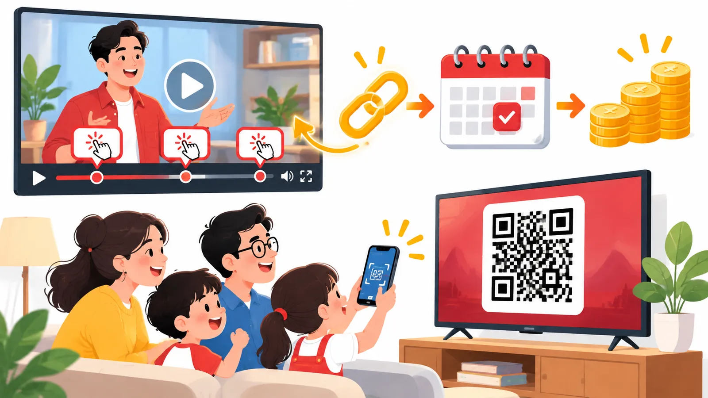

07Buổi 7 trên 8
Biến lượt xem thành doanh thu
Đo lượt xem và MQL từng video, đặt CTA đúng chỗ, dựng YouTube VSL và kiên nhẫn với chu kỳ chuyển đổi để lượt xem ra doanh thu.
Mục tiêu buổi học
- Theo dõi hai chỉ số Views và MQL cho từng video, phân biệt MQL với một cuộc hẹn bất kỳ.
- Thiết lập tracking link riêng cho mỗi video để biết video nào mang về khách hàng và doanh thu.
- Bố trí CTA ở 5 vị trí trong video theo đúng nguyên tắc về thời điểm và cách dẫn dắt.
- Xây dựng một YouTube VSL làm video bán hàng chủ lực và đánh giá doanh thu theo đúng chu kỳ 3 đến 6 tháng.
Tóm tắt 30 giây
Đây là một trong những buổi quan trọng nhất của cả chương trình. Nhiều kênh YouTube có hàng trăm nghìn lượt xem nhưng chủ doanh nghiệp không biết chính xác các video đó mang về bao nhiêu khách hàng và doanh thu; không đo lường thì không biết hoạt động nào thực sự hiệu quả. Buổi này hướng dẫn bạn đo đúng hai chỉ số, gắn link theo dõi cho từng video, đặt CTA ở đúng chỗ, dựng một video bán hàng chủ lực và đủ kiên nhẫn chờ doanh thu phản ánh tác động của nội dung.

1. Mỗi video chỉ cần theo dõi hai chỉ số
Thay vì nhìn hàng chục con số trong YouTube Studio, bạn tập trung vào hai chỉ số chính:
- Views: lượt xem của video.
- MQLs (Marketing Qualified Leads): số lượng khách hàng tiềm năng đủ điều kiện mà video tạo ra.
MQL trong hệ thống này không đơn thuần là bất kỳ ai đặt lịch hẹn. Đó phải là một cuộc hẹn đến từ người thuộc nhóm khách hàng mục tiêu và có khả năng chi trả cho sản phẩm hoặc dịch vụ của doanh nghiệp. Nói cách khác, MQL giống người bước vào cửa hàng vừa đúng đối tượng vừa có tiền mua, khác với người chỉ ghé xem cho biết.
Ví dụMột video có 10.000 lượt xem và tạo ra 20 cuộc hẹn. Nhưng chỉ 3 cuộc hẹn đến từ đúng đối tượng khách hàng. Con số cần quan tâm là 3 MQL, không phải 20 cuộc hẹn.
2. Mỗi video cần một tracking link riêng
Tracking link là đường link theo dõi gắn riêng cho từng video, đặt trên tên miền của doanh nghiệp, ví dụ yoursite.com/yt/147. Khi mỗi video có một "địa chỉ" riêng, bạn lần ngược được mọi khách hàng về đúng video đã đưa họ đến.
Đường link này giúp bạn biết:
- Ai đã nhấp vào link từ video.
- Có bao nhiêu người truy cập.
- Bao nhiêu người đăng ký hoặc đặt lịch.
- Những cuộc hẹn nào thực sự đến từ video đó.
- Bao nhiêu khách hàng trong số đó đã mua hàng.
Hệ thống cần tự động ghi nhận các thông tin này vào phễu bán hàng, thay vì để nhân viên nhập thủ công từng cuộc hẹn.
Ghi nhớĐiều gì không được đo lường thì rất khó được quản lý và tối ưu.
3. CTA cần xuất hiện ở 5 vị trí trong video
CTA (call to action) là lời kêu gọi người xem làm một việc cụ thể, như nhấp link, đặt lịch hay nhận tài liệu. Một sai lầm phổ biến là chỉ đặt CTA ở cuối video, khiến bạn bỏ lỡ rất nhiều khách hàng tiềm năng.
Năm vị trí nên đặt CTA:
- Bình luận được ghim (pinned comment).
- Phần mô tả video (description).
- Khoảng 30% thời lượng video.
- Những giây cuối cùng của video.
- Đường link trong phần giới thiệu kênh (channel bio).
Rất nhiều kênh quên ghim bình luận. Trong khi đó, người xem trên điện thoại không nhìn thấy ngay đường link trong phần mô tả mà phải nhấn mở rộng mới thấy.
Ví dụMột số kênh sau khi bổ sung CTA vào bình luận ghim đã tăng khoảng 30% lượt nhấp và số cuộc hẹn, dù không thay đổi bất kỳ yếu tố nào khác.
4. CTA giữa video tiếp cận được nhiều người xem hơn CTA cuối video
Thử làm một phép tính đơn giản với các giả định sau:
| Thông số | Giá trị |
|---|---|
| Lượt hiển thị | 1.000 |
| Tỷ lệ nhấp vào video | 5% |
| Tỷ lệ người xem đến cuối video | 5% |
Nếu chỉ đặt CTA ở cuối video, lời kêu gọi chỉ tiếp cận được một phần rất nhỏ người xem, vì phần lớn đã rời đi trước đó. Ngược lại, khi đặt CTA ở khoảng 30% thời lượng video, bạn đã có đủ thời gian cung cấp giá trị mà vẫn tiếp cận được phần lớn khán giả còn đang theo dõi.
Ngoài ra, theo kinh nghiệm thực tế, đường link trong phần giới thiệu kênh có thể đóng góp khoảng 10 đến 15% tổng lượt nhấp.
5. QR code giúp người xem trên TV hành động được
Ngày càng nhiều người xem YouTube trên TV, đặc biệt là nhóm khán giả lớn tuổi. Họ không thể dễ dàng nhấp vào đường link trong phần mô tả như khi xem trên điện thoại hoặc máy tính.
Vì vậy, bạn nên cân nhắc cho mã QR xuất hiện trên màn hình để người xem quét và truy cập trực tiếp.
Lưu ýNếu khách hàng mục tiêu của bạn hay xem trên TV, một CTA chỉ có link trong mô tả gần như vô hình với họ.
6. CTA hiệu quả tuân theo một số nguyên tắc về thời điểm và cách dẫn dắt
Các nguyên tắc nên áp dụng khi đặt CTA:
- Mỗi video nên có 2 CTA chính: một ở 1/3 đầu video và một ở cuối video.
- Không giới thiệu tài liệu tặng miễn phí quá sớm khi người xem chưa nhận được giá trị thực sự. Ví dụ, đặt CTA ngay ở giây thứ 80 có thể là quá sớm.
- Bỏ thanh tiến trình khỏi phần đồ họa CTA nếu nó khiến người xem cảm thấy đây là đoạn có thể tua qua.
- CTA hiệu quả nhất được xây dựng xuyên suốt nội dung, thay vì xuất hiện đột ngột.
- Lead magnet, tức món quà miễn phí như tài liệu, checklist để đổi lấy thông tin liên hệ, thường hợp hơn với nhóm khách hàng đã có kiến thức và mức độ nhận thức cao.
- Với người mới bắt đầu, có thể điều hướng thẳng đến cuộc gọi tư vấn, webinar hoặc danh sách chờ.
- Mỗi video nên kết thúc bằng một lời kêu gọi hành động rõ ràng.
7. YouTube VSL là video bán hàng chủ lực của cả kênh
VSL (Video Sales Letter) là một video có hình thức như video YouTube thông thường, nhưng được xây dựng để thuyết phục khách hàng và hỗ trợ quá trình bán hàng. Điểm đặc biệt là mọi video khác trên kênh đều có thể điều hướng người xem về video này, giống nhiều con đường cùng dẫn về một cửa hàng chính.
Đừng đặt chữ "VSL" trong tiêu đề. Hãy làm nó giống một video chia sẻ giá trị bình thường.
Nội dung video nên được phát triển từ bản ghi các cuộc gọi bán hàng thực tế. Từ đó, bạn nắm được:
- Những phản đối thường gặp của khách hàng.
- Những niềm tin hoặc suy nghĩ đang cản trở họ mua hàng.
- Những từ ngữ khách hàng thực sự sử dụng.
- Những câu hỏi quan trọng cần được giải đáp trước khi mua.
Sau khi hoàn thành, đặt link video ở dòng đầu tiên trong phần mô tả của các video khác và ghim video trên kênh. Video này có thể giữ nguyên trong khoảng 6 đến 12 tháng trước khi cần cập nhật lớn.
Theo kinh nghiệm triển khai, các doanh nghiệp làm YouTube VSL đều thấy đây trở thành một trong những video có tỷ lệ chuyển đổi tốt nhất trên kênh.
Ví dụÝ tưởng này được học từ Iman Gadzhi. Taki Moore từng chia sẻ rằng một video như vậy đã mang về hơn 5 triệu USD. Ryan Deiss có 5 video hỗ trợ cùng điều hướng về một video chủ lực, và mỗi người đăng ký email mới đều được đưa đến xem video này. Video gần như không thay đổi trong hơn một năm nhưng vẫn là kênh thu hút khách hàng quan trọng nhất của ông; ông thậm chí đã giảm ngân sách quảng cáo từ 150.000 USD/tháng xuống gần như bằng 0.
8. Kênh nhỏ vẫn có thể tạo ra doanh thu lớn
Đừng nghĩ chỉ những kênh có hàng trăm nghìn hay hàng triệu subscriber mới kiếm được tiền từ YouTube. Điều quyết định là video đến đúng người, không phải số người đăng ký.
Ví dụMột kênh có dưới 50.000 người đăng ký vẫn tạo ra doanh thu 70.000 đến 120.000 USD/tháng thông qua YouTube. Kênh này vẫn tiếp tục nhận khách hàng từ một video đăng từ năm trước, dù video đó chỉ có 220.000 lượt xem.
Một mức tham khảo (benchmark): với 5.000 lượt xem mỗi video và tần suất một video mỗi tuần, doanh nghiệp có thể hướng tới mức doanh thu 200.000 USD/tháng.
Lưu ýĐây là mức benchmark rút ra từ kinh nghiệm thực tế, không phải cam kết doanh thu hay công thức áp dụng cho mọi ngành hàng.
9. Sai lầm lớn nhất là thiếu kiên nhẫn với chu kỳ chuyển đổi
Jeremy Haynes đưa ra một tỷ lệ đáng chú ý: 15% và 85%. Với sản phẩm giá trị cao (high-ticket) và nhóm khách hàng hiểu biết sâu về thị trường:
- Khoảng 15% khách hàng có thể mua ngay.
- 85% còn lại có thể cần thêm 3 đến 6 tháng trước khi ra quyết định.
Đây là lý do nhiều nhà sáng lập thất vọng quá sớm. Họ đăng video trong 6 tuần, thấy doanh thu chưa tăng và quyết định thay đổi toàn bộ chiến lược, trong khi nội dung vẫn đang trong quá trình xây dựng nhận thức và niềm tin với khách hàng. Giống trồng cây ăn quả: mới vài tuần chưa có trái không có nghĩa là cây hỏng.
Hãy tách rõ hai loại dữ liệu:
| Loại dữ liệu | Nhịp điều chỉnh |
|---|---|
| Lượt xem và hiệu suất nội dung | Có thể điều chỉnh hằng tuần |
| Doanh thu | Có thể cần 3 đến 6 tháng để phản ánh đầy đủ tác động của nội dung |
Ghi nhớĐừng vì doanh thu chưa tăng ngay mà vội phá bỏ một hệ thống đang được xây dựng đúng hướng.
10. Instagram có thể khai thác cùng một tệp khách hàng
Một doanh nghiệp dùng Instagram Reels để chia sẻ các hướng dẫn từng bước, sau đó kêu gọi người xem bình luận một từ khóa để nhận tài liệu hoặc hướng dẫn đầy đủ. Những video này thường mang về các hợp đồng trị giá 20.000, 30.000 hoặc 40.000 USD.
Nếu đăng cùng video đó cho một nhóm khán giả hoàn toàn lạnh, tức là chưa từng biết đến doanh nghiệp, nội dung có thể không tạo ra kết quả. Thành quả trên đến từ quá trình nuôi dưỡng cùng một tệp khách hàng trong nhiều tháng.
Ví dụVới một doanh nghiệp khác, chỉ trong 11 ngày đầu tháng 10, doanh thu từ Instagram đã bằng khoảng một nửa tổng doanh thu cả quý III, với doanh thu trung bình mỗi ngày cao gấp 3 đến 4 lần so với bình quân quý trước.
Checklist áp dụng
Tiến độ được lưu trên trình duyệt của bạn.
Bài tập thực hành
-
Thiết lập tracking link cho từng video. Đầu vào: danh sách video đang có trên kênh và tên miền của doanh nghiệp. Cách làm: tạo cho mỗi video một đường link riêng trên tên miền doanh nghiệp (ví dụ
yoursite.com/yt/147), cấu hình để lượt truy cập, đăng ký, đặt lịch và mua hàng được ghi tự động vào phễu bán hàng. Đầu ra: bảng đối chiếu video với tracking link, có thể xem số người truy cập, số cuộc hẹn và số khách mua từ từng video. -
Bổ sung CTA vào bình luận ghim của 20 video gần nhất. Đầu vào: 20 video mới nhất trên kênh. Cách làm: viết một bình luận có CTA rõ ràng kèm tracking link của video đó, đăng và ghim lên đầu phần bình luận. Đầu ra: 20 video đều có bình luận ghim chứa CTA; ghi lại lượt nhấp và số cuộc hẹn trước và sau khi bổ sung để so sánh.
-
Dựng dàn ý YouTube VSL từ 10 cuộc gọi bán hàng. Đầu vào: bản ghi 10 cuộc gọi bán hàng gần nhất. Cách làm: đọc từng bản ghi, liệt kê các phản đối thường gặp, niềm tin cản trở việc mua, từ ngữ khách hàng hay dùng và các câu hỏi họ cần được giải đáp trước khi mua; sắp các ý đó thành dàn ý một video chia sẻ giá trị, tiêu đề không có chữ "VSL". Đầu ra: một dàn ý VSL hoàn chỉnh, sẵn sàng chuyển sang viết kịch bản.
Câu hỏi tự kiểm tra
Một video có 10.000 lượt xem và 20 cuộc hẹn, trong đó 3 cuộc hẹn đến từ đúng khách hàng mục tiêu. Video này tạo ra bao nhiêu MQL?
Xem gợi ý
3 MQL, vì MQL chỉ tính cuộc hẹn từ người đúng nhóm mục tiêu và có khả năng chi trả.
Năm vị trí nên đặt CTA trong và quanh một video là gì?
Xem gợi ý
bình luận ghim, phần mô tả, khoảng 30% thời lượng video, những giây cuối video, link trong channel bio.
Vì sao CTA ở khoảng 30% thời lượng thường hiệu quả hơn CTA chỉ đặt ở cuối video?
Xem gợi ý
lúc đó bạn đã kịp cung cấp giá trị mà vẫn tiếp cận phần lớn khán giả còn xem, còn cuối video chỉ còn một phần rất nhỏ người xem.
Nội dung của một YouTube VSL nên được xây dựng từ nguồn nào, và nên giữ video này bao lâu trước khi cập nhật lớn?
Xem gợi ý
từ bản ghi các cuộc gọi bán hàng thực tế; có thể giữ khoảng 6 đến 12 tháng.
Tỷ lệ 15% và 85% của Jeremy Haynes nói lên điều gì về cách đánh giá doanh thu từ YouTube?
Xem gợi ý
với sản phẩm high-ticket, khoảng 15% khách mua ngay, 85% cần thêm 3 đến 6 tháng, nên doanh thu cần được đánh giá theo chu kỳ 3 đến 6 tháng chứ không sau vài tuần.